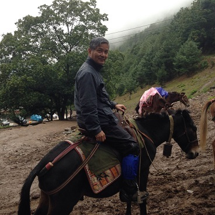
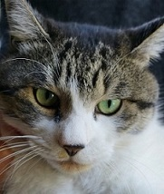

🏠
日
月
縦書き／横書き
| なつ教授の霊長類学入門３ 松沢教授の特別講義「山が教えてくれたこと」 (知は力なり！シリーズ) |
| 松沢 哲郎 |
| etwas Neues (2017) |
|
松沢教授の特別講義「山が教えてくれたこと」

Vivat academia! vivat professores!
vivat membrum quodlibet!
vivant membra quaelibet!
semper sint in flore!
アカデーミア万歳！教授達万歳！
どの学生も万歳！
すべての友人も万歳！
彼らみな常に華の中にあれ！
霊長類学の世界へようこそ
温泉ザルに会ってみたい！
シャバーニと一緒に写真撮りたい！
アイちゃんと数字の早当て競争してみたい！
「なつ教授の霊長類学入門」では、日本が誇る世界でもトップクラスの霊長類研究の方々の研究や考えについて学びます。解説をしてくれるのは、フント大学のマドンナ、ラブラドール犬のなつ教授。つやつやの毛並みはみんなの憧れ、そんな教授の講義をお楽しみください。
第１回 霊長類学入門―日本一から世界一の研究へ
第２回 伊谷教授の「コンゴの森とボノボの生態」
第３回 松沢教授の「山が教えてくれたこと」【本書】
講義を受講するのは小太郎くん、かのんさん、小夏さんです。さっそく受講証を発行しましょう。
現在、本講義では学生募集中です。ペットの写真と一緒に、なつ教授への質問をお待ちしています。これは！という質問や読書感想文は、なつ教授の回答つきで次号に掲載されます。
本書への質問・読書感想文とペットの写真はこちらまで：etwasneuesbooks@gmail.com
- この本は横書きでレイアウトされています。
- また、ご覧になる環境により、表示の差が認められることがあります。
- 本作品では、ルビが（ ）内に表示されています。
はじめに
フント大学理工学部生物科学科なつ教授
みなさん、こんにちは。「霊長類学入門」の講義へようこそ。連続講義の第3回目はチンパンジー研究の第一人者、松沢哲郎教授の講義です。学生時代に夢中になられた山登りで学んだことは何だったのか、また「比較認知科学」という新しい分野にどうやってたどり着いたのか、お話していただきます。霊長類研究所での研究エピソードなどのお話も聞く時間を設けました。本講義が皆さんにとって素晴らしい体験になることを願います。

ついてきてくださいね、なつ教授
ついていきます！
第１部
「山岳部」入学？！
アイといっしょにハイ、チーズ！
みなさん、こんにちは。松沢哲郎です。
今日はふたつの話をします。ひとつは私が山登りを通じて学んだこと、もうひとつは新しい学問分野を切り開いたときのこと、についてです。チンパンジーのアイとのプロジェクトについては、また後ほど話します。
私が京都大学に入学したのは1969年のことでした。ちょうど60年代は「スチューデント・パワー（学生運動）」の時代で、その年は東京大学の入試がありませんでした。高校は都立両国高等学校でしたから、もよりの国立大学は東京大学。当時の国立大学の月謝は1,000円でした。年間12,000円の授業料でしたので、親孝行のためにも東京大学に行きたいと思っていましたが、入試がなかったので、京都大学を第一希望の大学にしました。
ですが、当時は京都大学も学生運動のために封鎖されていたので、入学するとすぐに山岳部に入りました。これが私の人生の大きな転機になったと思います。山岳部では年間120日、山に登っていました。残りの3分の1は文献を読んだり、地図を探したり、さまざまな山の下界での仕事に利用していて、残りの3分の1は、やがて再開された授業に取り組む、というような1年間でした。
そんなに山にいたんですか！
そう。1回生のときも、2回生のときも、3回生のときも、4回生のときも ―― ヒマラヤに行くために留年して5回生までやったのですが ―― 5年間きっちり120日ずつ山へ行きました。人生で必要なことは、研究を含めてですが、山登りを通じて学んだということになります。
これは1970年、19歳で夏の剣合宿のときの写真。
いつも山岳部の仲間と一緒でした。右端が私。
ほんとだ、今と変わらないですね
雪のなかでたき火をして食事をしたり
テントを持っていかないですから、このように雪の中で雪洞を掘って暮らします。
「学部はどちらですか？」 ―― 「山岳部です」
当時はそういう暮らしでした。
寒そうだけど、楽しそう！
これは北海道の日高山脈、雪の季節に行った写真です。コイカクシュ札内岳山頂から遠く彼方に見える1839と呼ばれた、名前がついていない峰があって、「積雪期にその山に登るんだ」というのが私の最初の目標でした。どうしてそのような目標を立てたかというと、それがヒマラヤへの第一歩になるからです。こうして1969年から1973年まで、つまり5回生のときまで京都大学山岳部で山登りをしていました。
パイオニア・ワーク
登山を通じて学んだことは「パイオニア・ワーク」です。どういう学問であれ、どういう道に進むのであれ、パイオニア・ワークが大切だ、つまり、まだ誰も登っていない頂（いただき）に到達する、あるいはまだ誰も考えていないことを考える、誰も見つけていないものを発見する、そういったことが必要だ、ということをこの登山から学びました。
そしてパイオニア・ワークのためには何が必要かというと、ふたつ必要だ、と言われました。「オールラウンド」と「コンプリート」。オールラウンドというのは「なんでもできる」ということです。山登りでいえば、積雪期の技術も必要ですし、岩を登る技術も必要、長い山峰を無事にこなす体力も必要となります。
コンプリートというのは、「完璧にできる」ということ。登山では少しの間違いも許されない ―― なぜなら命につながりますから。オールラウンドでコンプリート、そうでなければパイオニア・ワークはできないんだ、と教えられました。
しかしまったく当然のことですが、オールラウンドでコンプリートにできる人というのはこの世の中におりませんし、あるいは、すぐにはそういうことができない。それでは、どうすればよいのか、というと「ステップ・バイ・ステップ（一歩ずつ）」です。言い換えれば「デイ・バイ・デイ（一日ずつ）」。一日一歩ずつ。更にいうと、山岳部では仲間たちと暮らしていますから「サイド・バイ・サイド（並んで協力して）」。そういう仲間がいて、一日を積み重ねていって、一歩ずつ「オールラウンド」「コンプリート」に近づく、という過程の先に「パイオニア・ワーク」があると山岳部時代に学びました。
まさに登山に必要なことが学問研究にも必要なことだったんですね
私にとっての「アンナプルナ」
山岳部の5年間でふりかえってみて、もし座右の書として1冊をあげろと言われれば、いちばん影響を受けたのは『処女峰アンナプルナ 最初の8000m峰登頂』という本です。
読んだことないです
大丈夫、よほど山登りが好きでないと読んだことはないと思います。ヒマラヤにはエベレスト、K2、カンチェンジュンガ・・・と高い順番に14座、8,000メートル級の山があるんですが、人類が初めて8,000メートルに到達したのは1950年 ―― ちょうどくしくも私が生まれた年なのですが ―― フランス隊による処女峰アンナプルナの無酸素登頂でした。隊長がモーリス・エルゾーグさんという方で、その方が書いた本です。
たまたま私が2回生のときの1970年11月に、エルゾーグさんが来日されて、日仏会館で講演をされました。幸いフランス語を履修していたので、私にもお話の内容は分かりました。講演会の後、勇気をふりしぼってエルゾーグさんのところへ近づいていって、握手をしてサインをもらったのがいい思い出です。登頂するときに、凍傷になられて手足の指を20本全部切り落とされたのですが、とても柔らかい手だったことを覚えています。
その『処女峰アンナプルナ』の最後に書かれているのが、「人生には他のアンナプルナがある」でした。モーリス・エルゾーグさんにとっての「アンナプルナ」はまさにアンナプルナだったわけですけれども、「それぞれの人が初登頂すべき目標がある」ということをおっしゃっていたんだと思います。
この本との出会いから、私にとっての「アンナプルナ」を見つける、ということが始まるのですが、まだ18歳で大学に来た当時、山岳部で山登りをすることしか頭にありませんでしたので、私にとっての「アンナプルナ」は当然のことですが、ヒマラヤへの初登頂ということになります。
ヒマラヤですか！
初めてのヒマラヤ
しかし、1950年にはアンナプルナ、1953年にはエベレスト、1964年のシシャパンマを最後に8,000メートル級の山はすべて初登頂されていましたので、私が生きていた時代というのは、「ヒマラヤ鉄の時代」つまり、ただ初登頂するのではなく、難しい岸壁を登って頂上に行く、とか、未踏の山稜を登る、あるいは春のプレモンスーンではなく秋のポストモンスーンに登る、あるいは無酸素で登る、シェルパなしで登る、など、そういったバリエーションルートの時代でした。
1973年には京都大学学士山岳会による、カンチェンジュンガ西峰（ヤルン・カン, Yalung Kang）という当時未踏で8,505メートルある山を目指す隊に最年少の隊員として参加しました。隊長は西堀栄三郎さんという方で山岳部の先輩ですが、南極越冬隊の隊長として知られた方です。私が一番若い隊員で22歳、西堀先生が70歳ですので、ちょうど半世紀離れていました。西堀先生（化学）は、桑原武夫先生（フランス文学・文化）、今西錦司先生（霊長類学）と同級生で、精神の三つ子ですね、山岳部の者にとっては仰ぎ見る先輩たちだったのです。
西堀栄三郎先生です
ただ、西堀先生は非常に気さくな方で、偉ぶったところは全然なくて、こんなエピソードがありました。5,500メートルのベースキャンプについた夜のことです。となりのテントで寝ている西堀先生が、ごそごそと歩き回っておられる。どうしたのかなと思って「先生、何をしているのですか」とお尋ねすると、「いや、ウチュウジンを探しておるんや」と。
これは高度障害でてっきり頭がおかしくなったんだ、と思ったんですね。先生はプレパラートに、髪に塗るポマードという油を薄く塗って、置いているんです。
何を探していらしたんだろう？
実はね、先生のおっしゃる「ウチュウジン」というのは宇宙からくる塵のことでした。下界のダストは5,500メートルまでは上がってきませんし、先生は南極でも隕石を見つけるということに非常に関心を抱いていましたから、ヒマラヤは第三の極地として、宇宙からくる塵、つまり塵になった隕石を集めるのがとても格好の場所だということをご存じだったんですね。
ヒマラヤってすごいや！
さて、私自身はキャンプ２からキャンプ３へのルートを ―― これは非常に難しいところが一部あるんですけれども ―― そこで一生懸命ルート工作をして、急な雪の断崖にジュラルミン製のハシゴを設置して、多少なりとも隊に寄与することができましたが、非常に重篤な高山症状がでて、いったん下へ降りてしまいました。なので、登頂時にはあまりお役に立てませんでした。これが最初の、ちょっとほろ苦いヒマラヤでした。
そこで、その帰路に同級生の高木真一くん（彼が山岳部のリーダーで、私がサブリーダーだったのですが）とパキスタンに行って、カラコルム(Karakoram)で自分たちが登る未踏峰を見つけようと、まだ誰も入ったことのないパスー氷河(Passu Glacier)というところへ入きました。
非常に素晴らしい山が見つかりました。この写真は放牧をしている場所なんですが、この間の氷河を渡って、この尾根にとりついて、シスパーレという7,611メートルの未踏の山を見つけて、これが私の「アンナプルナ」と思ったわけです。22歳のときのことでした。
自分らしい山登り
ところが、日本に帰ってきましたら山岳部の遭難があり、私自身も遭難しまして、たくさんの岳友が亡くなる、という出来事がありました。そのため、登山としてはそこで終止符を打ち、学問に専念することになります。
最初は人間の両半球の研究をしていて、大学院のときにはネズミの分断脳の研究をしていたのですが、縁があって1976年の12月に霊長類研究所の心理研究部門の助手として採用されて、霊長類研究所に赴任し、翌年の11月にはアイが来て、チンパンジーの研究が始まる、ということになります。
これは当時の写真で、アキラですね。マリとアイと3人のチンパンジーがいました。このときから、今に続くチンパンジー研究に専念していたのですが、山に対する気持ちがまるっきり覚めたわけではなく ―― というのは、自分自身ちゃんと登れなかったという思いが非常に強くて、1973年に行った2回のヒマラヤ遠征の11年後、カンチェンジュンガに行ったことがあるという経験を買われて、日本山岳会のカンチェンジュンガ縦走隊の隊員として参加しました。
このとき、8,350メートルという非常に高いところまで無酸素で登ることができたんですけれども、頂上まではあとちょっと足りないというところで帰ってきました。隊としては縦走が半ば成功して、よかった、よかった、誰も欠けることなく無事に帰ってきたわけです。
そのとき、自分自身よく分かったのは、「登山家としては二流だな」ということです。一流の登山家とまみえてみると本当によく分かりました。簡単にいうと、体力も技術ももはやいかんともし難いということが分かりました。そこで、89年と90年に自分が遠征隊の隊長となって、身の丈に合った自分らしい山登りを考えました。もう、初登頂というのは意味がないので、すでに登られていたムスタグアタ(Muztagh Ata)という、シルクロードのふもとにある、古来行き来する人びとが眺めた非常に有名な山を選びました。
ご覧のように傾斜が非常に緩くて、さすがにこれは私でもなんとかなるだろうと思い、同志を募って1989年に行きました。その年はちょうど天安門事件のときで、行きは穏やかな天安門広場を通り、帰りは戦車と装甲車で完璧に制圧された天安門広場を日本人最後の団体として帰ってくる、という体験をしました。
眼下にあるのがカラクリ湖
ムスタグアタの場合、「シール」と呼ぶ滑り止めを貼ったスキーで山頂まで登り、その山頂から麓のカラクリ湖(Karakul Lake)に向かってスキーで滑っていくという登山でした。実は、これはあくまでも練習で、自分が隊長で7,546メートルの山を登れたら、8,000メートル峰にも手が届くだろうと考えていたのです。
そして翌年、本番の8,027メートルのシシャパンマ(Xixabangma)というチベットの山に自分が隊長として行きました。
行くには理由も必要なので、サルを2頭連れて行き彼らにも山を経験してもらいました。連れて行って分かったのですが、ニホンザルなので寒さには強い、ところが、低酸素には非常に弱くてぐったりとしていました。
人間のからだは、低酸素を引き金としてエリスロポエチン(Erythropoietin)という造血因子を急速に活性化して、赤血球をつくり出すことができると分かったのです。人間が高所に定住できる理由はそこにありました。
こうしてたくさんの岳友といっしょに、このシシャパンマという山に登りました。大変美しい山です。日中合同隊で、幸い私自身を含めてたくさんの隊員が登ることができました。
どきどきしました。よかったです・・・
「一番」の意味
と、いうのが長い長い前置きなのですが、さきほど言ったように、山登りが自分にとっての「パイオニア・ワーク」にならないんだということは納得し、その一方で、とりあえず自分が若いときから目指した8,000メートルの頂に立つ、ということができたわけです。
立ってみてよく分かったことは、「頂上と頂上じゃないところはまったく違う」ということでした。
全然違うんですね
ええ。なんで一番じゃなきゃいけないんですか、二番じゃだめなんですか、という問答がありますが、頂上じゃなきゃだめなんです。頂上の1メートル下でも、2メートル下でもだめです。
なぜなら、ずっとふもとから登っていって、頂上へ行くまでにどんどん視界は開けていくんですけれども、基本的にチベット高原が開けていき、エベレストが見えるのですが180度しか見えません。当たり前ですが、目の前に登る壁がじゃましますので180度しか見えないのです。
頂上だけが360度見えます。この頂上の1点に立つと、どーんと向こう側にネパールが、さらには向こうのインド平原まで見えます。今まで毎日毎日チベット側しか見てなかったのが、はじめて360度の景色が見えて、はるか遠く、まったく今まで見えなかったインド平原まで望むことができる、それを実感し、体験した、ということは自分にとってはすごく大きなインパクトがあって「あっ、これが頂上というものなんだ」と分かりました。それである意味、つきものが落ちたように、これで山登りはいい、と思いました。39歳のときです。
特別インタビュー１
こんにちは、松沢教授！
はい、こんにちは！
なつ教授：松沢教授の国内での研究は、チンパンジーのアイちゃんとの研究が有名ですね。さきほどのお話ですと、1977年11月にアイちゃんは霊長類研究所にやってきましたが、そのときの出会いはどうでしたか。
松沢教授：当時はまだ１歳になったばかりで、アイの目を見ると、アイも私の目をじっと見てきたので驚きました。ニホンザルだったら「キャッ」と言って逃げるか、「ガッ」と言って怒りますから。
かのん：ニホンザルとはあきらかに違っていたんですね。
松沢教授：ええ。そのとき何も持っていなかったので、自分がつけていた袖当て（袖カバー）を腕から抜いてアイに渡してみました。すると、ためらわずに受け取って、すーっと腕に通して、私が驚いているうちにすーっと腕からはずして「はい」って返してくれました。「相手と目を合わせる」、「自分からまねて何かをする」というところが、それまで研究していたニホンザルとはまったく違うところでした。
小夏：そこからアイちゃんとの研究が始まったんですか。
松沢教授：そうですね。アイはパートナーとしてちょうど40年一緒に研究しています。みんなもTVやビデオで見たことがあると思うけれど、アイは一瞬で覚えた数字を小さい順から指摘したり、覚えた文字で色の名前やものの名前を表すことができます。彼女の仲間もそう。とくに息子のアユムが生まれてからは、どのようにそれらをお母さんから学ぶのかも研究のひとつでした。
小太郎：アユムくんはお母さんに全部教わったんですか。
松沢教授：チンパンジーのお母さんは教えないでね、やって見せるだけ。子どもはじっとその姿を見ているんです。私たちはそれを「教えない教育、見習う学習」って呼んでいます。
なつ教授：それが人間のお母さんとの大きな違いなんですね。
松沢教授：そう。こうやって、チンパンジー流の教育と比べると、人間の教育の仕方が見えてくるでしょう？人間のお母さんは「教える」ときに、手を貸してあげる。そして、子どもが上手にできるとうなずいたり、微笑んだりして「認める」動作をします。逆にいえば、人間の子どもには「認められたい」という強い欲求がある。そこがチンパンジーとの大きな違いになります。
なつ教授：チンパンジーの研究から人間が分かるということですか。
松沢教授：はい。たとえば、誰かのために何かをしてあげる、という行動はチンパンジーにもあるんですが、互恵的な役割分担はしない。つまり、お母さんが子どもにお菓子をあげる、すると人間の子どもは４，５歳になると「おかあさんも！」と言ってお母さんに食べさせてあげようとするけれど、チンパンジーにはそれはありません。他者に尽くす、ということが人間らしい特徴ということになります。このように、同じヒト科の類人猿を知ることによって人間のことを知る、というのが私たちの研究方法です。
第２部
比較認知科学
シシャパンマ登頂と同年、1990年に『チンパンジーから見た世界』（東大出版会）という初めての本を書き、そこで「比較認知科学」という新しい言葉を作りました。比較認知(comparative cognition)という言葉はすでにあったのですが、比較認知科学という日本語を使ったのはこの本が最初です。
私としては、まだそのときしっかりと形になっていたわけではないのですが、チンパンジーから見た世界、ということで、人間以外の動物がこの世界をどうみているのか、そのことを、心理学的な手法を駆使して明らかにする、自分の研究の目標とする ―― 私のアンナプルナにする、と決意し書き上げた本です。
「比較認知科学」という言葉は、今ではたくさんの方が使われていますし、それぞれの思いが込められた定義があると思うのですが、私自身でいえば、自分の経歴に照らしていえば、霊長類学というものを父親として、心理学を母親として、そしてもともと持っている哲学への興味から生まれた科学、それが比較認知科学だと思っています。
哲学の使命
「学部はどちらですか？」「山岳部です」というのはものの言い方であって、18歳で京都大学に入学したときは文学部哲学科で哲学を学ぶつもりでした。ところが入ってみると何か違うなあと思い、心理学に転じたわけです。当時の哲学の先生方、野田又夫先生、山田晶先生、藤沢令夫先生、辻村公一先生などが、ギリシャ哲学やスコラ哲学、デカルトなどを講じておりました。
その中で、主任だった野田先生が、「哲学の使命はふたつある」とおっしゃっていました。第１は「この世界がどうなっているのか」です。この世界の森羅万象を解き明かす、それが哲学の使命だ、とおっしゃいました。私には胸に落ちるものがありました。
そもそも哲学を目指したのはアリストテレスの哲学のように、哲学であり、博物学であり、今日の科学をすべて包含するもの、ほんとうにこの世界の森羅万象がどうなっているのかを、探り当てることでしたから。野田先生は、それが哲学の大きなひとつの使命だ、とおっしゃった。
もうひとつは「人間はこの世界でどうふるまうべきなのか」でした。ドイツの哲学で「ザイン（Sein）」と「ゾレン（Sollen）」という言い方があります。ザインは「あるがままの姿」、ゾレンは「あるべき姿」と訳しますが、「どういうものなのか」と「何をどうなすべきか」はとりあえず別のことで、「この世界はどうなっているのか」ということに基づいて、「人間はこの世界でどうふるまうべきなのか」それを考えるのが哲学だ、とおっしゃいました。
これも私には非常に納得がいきました。哲学には倫理学という講座があるのですが、担当の森口美都男先生という主任教授の授業で熱心に聴講して思ったのは、たしかにこの世界がどうであれ、人間がどうふるまうべきなのかを明確に示すことこそ哲学の大きな使命だと思ったわけです。
そして、先生方がおっしゃることはその通りだ、と思う一方で、なんとか自分の「パイオニア・ワーク」をしなければならないわけですから、どこにパイオニア・ワークがあるのかなあ、と山に登りながら考えました。
誰にも成し遂げられていないことを探す、ってことですね
自分自身の「パイオニア・ワーク」
そのとき、「実は哲学の使命は3つあるんじゃないかな」と考えました。20代前半の学生が考えることですから、独りよがりなところは割り引いて聞いてほしいのですが、自分なりに考えて「哲学の使命は3つある」というところにたどり着きました。
「人間とは何か」 ― この外界には森羅万象というものがあって、では、どうすべきか、といっても、実はこの自然の成り立ちというのは、人間にとっても、イヌにとっても、ハエにとっても同じ物理的な世界があります。しかし、ハエにはハエの見え方がある、イヌにはイヌの見え方がある、人間には人間の見え方がある。 私たちがどうふるまうかというときに、人間にかかってくる制約、人間という目を通してこの世界を見たときに、「人間がどういうものか」が分からないと「どうふるまうべきか」ということにつながらないんじゃないかと、そう考えたのです。
哲学の使命は3つある。
「この世界はどうなっているのか」を自然科学、あるいは人文科学、社会科学も含めて、さまざまな分野で解き明かそうとしているけれども、また「この世界で人間はどうふるまうべきか」は、倫理学その他の学問が明示してくれるとしても、まだその間に残る問題として「人間とは何か」ということを理解するところに哲学の使命がある、と思ったのです。
「人間とは何か」という問いに答える試みとして、比較認知科学という学問を作って、そういう目で考えてきた ―― その大前提となることは、人間の体が進化の産物であるのと同様に、人間の心も進化の産物だ、ということです。
人間の体には進化的な起源があって、実際、化石を追えばその歴史的な経過をたどることができます。だったら同じように、人間の心も歴史的な経緯があるはずです。しかし、心、あるいはそれを担う器官としての脳は形として残らないですよね。いくら地面を掘っても脳という形はでてきません。頭蓋骨の化石はでてきますが脳の化石はでてきません。
そうすると、何ができるか ―― 共通の祖先から分かれたものに目を向けることで、現在生きている、現生種の中で比較するということで、その後の進化の道をたどる ―― これは生物学における「比較」という王道の手法です。比較解剖学、比較形態学、比較生理学、比較行動学、と同じように、比較認知科学というのがあってもいいんじゃないか、と考えたわけです。
認知科学というのは1970年代当時の流行りの言葉で、心理学とは一線を画していました。心理学というのは、だいたい200年くらい歴史がありますから、さまざまな意味で使われますが、心の科学的な研究のことを認知科学というようになりました。
認知科学をさまざまな人がするなかで、私は人間とそれ以外の種を比較することで、人間の心がたどってきた歴史性、どういう歴史をたどって今あるのかが理解できると考えました。すなわち、共通祖先がいてそこから分かれてきたふたつの種、たとえば、人間とチンパンジーを比較して、同じところがあればそれは共通祖先に由来しているし、それぞれにユニークなものがあるとすれば、それは共通祖先から分かれたあとに、それぞれが進化する過程で身につけたと考えられるのです。
そういう意味でいえば、比較認知科学とは、生物学や進化というものに乗りながらも、心の進化、心の起源、心の歴史性、心の展望を考えるという学問なのです。
ご清聴ありがとうございました。
松沢教授、ありがとうございました！
特別インタビュー２
松沢教授、素敵な講義ありがとうございました。質問をいくつかしてもよろしいでしょうか。
はい、どうぞ。
京都大学学士山岳会(AACK)の「学士」ってどういう意味ですか？
松沢教授：山登りと同時に学問もやる、というのがこの山岳会の伝統で、AACKはAcademic Alpine Club of Kyotoの略です。1931年発足当時Alpine Clubだったらどこにでもありましたが、Academicがついていたのは京都だけでした。そして当時から今も、会員は京都大学出身者に限定せずに、志を同じくする人たちの会です。
最初は哲学を目指してのちに霊長類学へ移られましたが、それまでにまったくサルについての勉強はなさっていなかったのですか。
松沢教授：ええ、まったく。影響を受けたのはフォン・ユクスキュル（J.von.Uexküll）という人の『生物から見た世界』という本です。先ほど申し上げた通り、人間や動物が見ている世界は物理的には同じだけれど、見えている世界は違う。人間から見た世界に特殊性があるとしたら、それを動物の世界から見ようと思ったんです。
もうひとつ、ウィルソン（Willson）の『Sociobiology（社会生物学）』（1975年）という本にも影響を受けました。この本の最後の2章「ヒト以外の霊長類」と「ヒト」の翻訳を担当したのですが、その中で、この先は細胞生物学と社会生物学の研究が伸びて、個体レベルの行動の研究は消えていく、と予言されていました。だったらみんなが行く伸びる方より、誰も行かない消えていく方をやろうと思ったのです。そこにこそ、自分が探していくものがあると感じられました。
先生の「アンナプルナ」なったんですね。
松沢教授：そう。山登りでは、8,000メートル峰は14座しかない。ところが、人間の脳は自分で山をつくります。「ここが山で、ここが行くべき山の頂上です」と。80年代にプレマックさん（D.Premack）とグドールさん（J.Goodall）に会ったことも転機になっています。ふたりともすでに8,000メートル級の山を登っている ―― 実験室での仕事ではプレマックさんには追い付かない、一方チンパンジーの野外研究に一生を捧げているグドールさんがいる、だから今から同じようなことをしてもバリエーションルートをたどるのと同じことになっちゃう。そこで、ふたりの間をつなぐ仕事、実験室での仕事をしながら、フィールドワークもしようと思ったのです。
初めてのフィールドワークはどうでしたか。
松沢教授：1986年に初めてアフリカに行きました。霊長類の「子殺し」の発見で世界的に有名な杉山幸丸先生のフィールドに行かせていただいたのですが、そこで「子捨て」にあいました。
「子捨て」とは？
松沢教授：先輩や指導教員が、あるフィールドまでは連れていくけれど、そこで子ども（学生）を捨ててくる、というやり方です。あとはなんとか自分でしなさい、という方法。伊谷先生も次回講義をされる山極先生もみんな子捨てにあってます。私の場合は、初めてアフリカにひとりでついて、現地の人でぎゅうぎゅう詰めの乗合自動車で目的地のボッソウに向かい、ようやく杉山先生に会えた翌日、野生のチンパンジーを初めてみて感動したのもつかの間、杉山先生がマラリアにかかってしまい、飛行場まで見送ってひとりで村に残りました。
山とジャングルではどちらが大変でしたか。
松沢教授：アフリカもヒマラヤに劣らないくらい危険だけれど、日常のことをいえば山奥の村はそんなに危険ではない。このとき、熱帯雨林でもヒマラヤの頂上でも、フィールドワークの基本はどこでも同じだと分かりました。山登りでフィールドワークをがんがん叩き込まれたから、どこへでも行ける。どこへでも行って、そのなかで自分の感性に響いた発見をすることができる。これがフィールドワークのだいご味です。みなさんもぜひフィールドワークを経験して「自分の山」を見つけてほしいというのが私の願いです。
長時間ありがとうございました！
おつかれさまでした
なつ教授
松沢教授・・・わたしも馬に乗りたいです
小太郎くん
ぼくは後ろから追いかけますからっ
かのんさん
もぉ、走るのだーいすき！
小夏さん
松沢教授・・・ひざの上に乗ってもいいですか？
いいですよ！さあ、出発！
＜著者＞
松沢 哲郎（まつざわ てつろう）
1950年、愛媛県松山市生まれ。京都大学文学部哲学科卒、理学博士。京都大学高等研究院・特別教授。京都大学霊長類研究所・兼任教授。公益財団法人日本モンキーセンター・所長。京都大学学士山岳会・会長。チンパンジーの研究を通じて人間の心や行動の進化的起源を探り、「比較認知科学」と呼ばれる新しい研究領域を開拓した。2004年紫綬褒章受章、2013年文化功労者。
＜編集・著作＞
金矢 真美（かなや まみ）
東京生まれ。上智大学文学部ドイツ文学科卒業。教育出版社での文部科学省検定高校英語教科書の編集業務を経て、現在、シリア在住のGhaythaa DeebとIFサイトを立ち上げ、世界中の人たちと英語でおしゃべりをする場を運営、エトヴァス・ノイエスで電子書籍を制作・販売する。趣味は、気心の知れた人たちと楽しい時間を過ごすこと。
＜参考図書＞
『想像するちから』（松沢 哲郎、岩波書店）
『人間とは何か チンパンジー研究から見えてきたこと』（松沢 哲郎編、岩波書店）
＜参考サイト＞
＜写真提供＞
松沢 哲郎
辰巳 祐樹（なつ）
森田 恭子（小太郎）
菊池 美希（かのん）
綾部 文子（小夏）
―――――――――――――
なつ教授の霊長類学入門 3
松沢教授の特別講義「山が教えてくれたこと」
2017年 2月 1日 発行
著者 松沢 哲郎
編集 金矢 真美
発行所 エトヴァス・ノイエス
etwasneuesbooks@gmail.com
http://etwasneues.wpblog.jp/
Copyright© 松沢 哲郎 2017年
- この図書は、デジタル配信用です。
- 本作品の内容あるいはデータを、全部・一部にかかわらず、無断で複製、転載、改ざん、改変、公衆送信（インターネット上への掲載を含む）することは、法律で禁止されています。また、個人的な使用を目的とする複製であっても、コピーガードなどの著作権保護技術を解除して行うことはできません。
IFについて
2016年 ― 「もしわたしたちが一緒に何かを考えたら・・・」 シリアと日本、西と東のアジアの両端にあるふたつの国から、IFというサイトが誕生しました。読む人と書く人がお互いやりとりするなかで、物語、考え、趣味、意見などを世界中の人たちとシェアしながらの、読者参加型のサイトです。現在までに世界２００地域の人たちがアクセスしています。サイトでは英語を使っていますが、完璧な英語でなくてかまいません。ぜひ遊びにきて、皆さんのIFを教えてください。
website & facebook

ドイツ語で「何か新しいこと」を意味するエトヴァス・ノイエスでは、みなさんの知的好奇心をくすぐるさまざまな分野の書籍を出版しています。
あるときは発掘現場へ飛び込み・・・
あるときは音楽の調べを追いかけ・・・
あるときは小説の主人公になり・・・
そしてあるときは人類の進化をなぞり・・・
さあ、未知の世界へ船出です！
http://etwasneues.wpblog.jp/
知は力なり！ なつ教授の＜霊長類学入門＞シリーズ
フント大学では新たに黒ラブラドールのマドンナ、なつ教授の霊長類学講義も受講できます！
一緒にアフリカへGO!
SECTION 3 松沢教授の特別講義「山が教えてくれたこと」【本書】
＜順次発刊予定です！お見逃しなく！＞
知は力なり！ シャムス教授の＜考古学入門＞シリーズ
カッツェン大学のシャムス教授がお贈りする「考古学」の魅力１２０％の入門書

わが大学へもどうぞ。お待ちしております
楽しい質問やペットの写真を送ってくださった読者には、毎セクション１名にシャムス教授よりトートバッグのプレゼント！
シャベルと刷毛を入れて、さあ、出発だ！
SECTION 1で見事トートバッグをゲットした「たくみくん」
シャムスバッグでサンマを物色中
＜以下、順次発刊予定です！お見逃しなく！＞
知は力なり！ ルーカス教授の＜エル・システマ入門＞シリーズ
カッツェン大学の永遠のライバル、フント大学ではイケメン・ゴールデン・レトリバーのルーカス教授お講義も受講できます！
いっしょに音楽を楽しみましょう！
素敵な質問にはプレゼントを考え中・・・
＜エル・システマ情報とともに、シリーズ発刊予定です！お見逃しなく！＞
知は力なり！ ベンツ教授の＜英語で読む短編小説＞シリーズ
ご存じフント大学のベンツ教授がお贈りする英文学の世界！
がんばって読んでください
楽しい質問にはプレゼントを考え中・・・
ところで
G.K.チェスタトンを、哲学者の鷲田精一さんが「折々のことば」（朝日新聞、2016年10月16日）で取り上げていたので紹介しましょう。
「鎖の強さはいちばん弱い環（わ）で決まるのだ」
For no chain is stronger than its weakest link.
「こうならなくてよかった」と思えたときにはじめて、人は物事が現にこうあることの意味を悟る。「理想」にかまけていると物事はよく見えない。おのれの不足を思い知る「謙虚」こそが眼を開くのであって、そのとき人は尊大になるどころか「けし粒の前にもひれ伏したくなる」。
そんなチェスタトンのことばに従って、謙虚なベンツ教授と一緒に英文で小説を読んでみましょう！
初の日本語・英語対訳リンクつきサイドリーダー
英語が苦手でもサクサク読めちゃう！一度お試しあれ！
＜順次発刊予定です！お見逃しなく！＞
基本に帰れ！＜キャラ＆ゴロ＞シリーズ
2017年、etwas Neues では新たに「基本に帰れ！」シリーズが登場しました。
覚えているようで覚えていない
記憶があやふや
こんなことをいまさら誰にも聞けないぞ
そんなときにはこれ！

「キャラとゴロで暗記する中学の社会 日本の地域と特産物（基礎編）」
どんとこい！これで明日のテストは100点だ！
＜引き続きお楽しみに＞